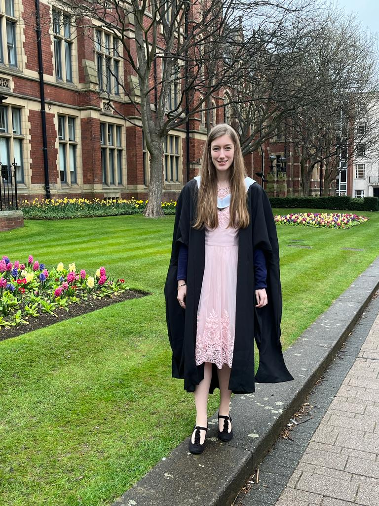

Hello! I'm Zoe Hancox, an AI Engineer at Vet-AI.
If I'm not working you'll find me doing yoga, cuddling my cat, jogging, gardening, reading dystopian or fantasy novels, or making wacky greeting cards.

My PhD Thesis
PhD Title: Temporal Graph-based Convolutional Neural Networks for Electronic Healthcare Record Prediction.
My PhD research revolved around using graphs (also called networks, the kind where nodes are linked via edges) to analyse data or make predictions of health outcomes. In particular creating temporal graphs and applying 3D convolutional neural networks to make predictions of health outcomes such as hip replacement using patient historical electronic healthcare records.
TL;DR Summary
This thesis introduces a Temporal Graph‑Based Convolutional Neural Network (TG‑CNN) that models Electronic Health Records as temporal graphs to predict hip and knee replacement risk up to five years in advance, achieving AUROC scores as high as 0.967. While the model delivers strong predictive performance, further work on explainability is needed to support its translation into real‑world clinical decision‑making.
Recent Experience
AI Engineer @ Vet-AI:
I currently work as an AI Engineer at Vet-AI, where I spend most of my time thinking about how machine learning can actually be useful in a real-world healthcare setting in ways that genuinely help people (and their pets).
A big part of my role is working on an LLM-powered triage tool that helps pet owners understand what might be going on before they speak to a vet. It’s the kind of problem that sounds straightforward at first, but quickly becomes complex. You need to balance helpfulness with safety, making sure the right questions are asked (at the right time without too much LLM sass), and ensuring the system behaves reliably across a wide range of scenarios.
Day-to-day, my work sits somewhere between data science and product. I dig into large datasets in Google Cloud to understand how the system is performing, where it’s falling short, and what can be improved. From there, it’s an iterative loop of refining the model, testing changes, and pushing improvements into production.
What I enjoy most about this role is the feedback loop: you build something, see how it performs in the real world, and then make it better. It’s applied machine learning in its truest sense: messy, iterative, and (when it works) genuinely impactful.
Postdoctoral Researcher @ The University of Leeds:
LIDA Health Early Career Researchers Committee Co-lead: Host and organise workshops on research enhancement and technical skills, health research talks, and career development sessions for ECRs.
Data Scientist @ NHS England: We transformed healthcare data using graph-based techniques using SAIL DataBank data.
Hypergraphs were applied to study multimorbidity pathways, helping to reveal complex relationships between conditions.
The results were shared NHS-wide and made publicly available through an open repository and report.
Learn more about how hypergraphs work and how to use them in this context via our interactive Streamlit app.
Applications and Implications of Artificial Intelligence (AI^2) President: I was one of the conceptualisers and founders of the Applications and Implications of Artificial Intelligence (AI^2) Forum at the University of Leeds.
What is the AI^2 forum? The Applications and Implications of Artificial Intelligence (AI^2) forum aims to bring students and researchers together to talk about different areas of AI and data science. It is used to encourage likeminded researchers to network and give people the opportunity to deepen their knowledge and share ideas. This forum is held on the last Wednesday of every month from 4-6pm. Sessions are also held with representatives from industry, where these representatives speak about their career pathway, the company they work at and any work they are undertaking that uses AI.
If you want to find out more you can read our blog summarising some of our sessions.
Journal Club Co-Chair: I co-chaired and helped arrange weekly journal clubs for the CDT.